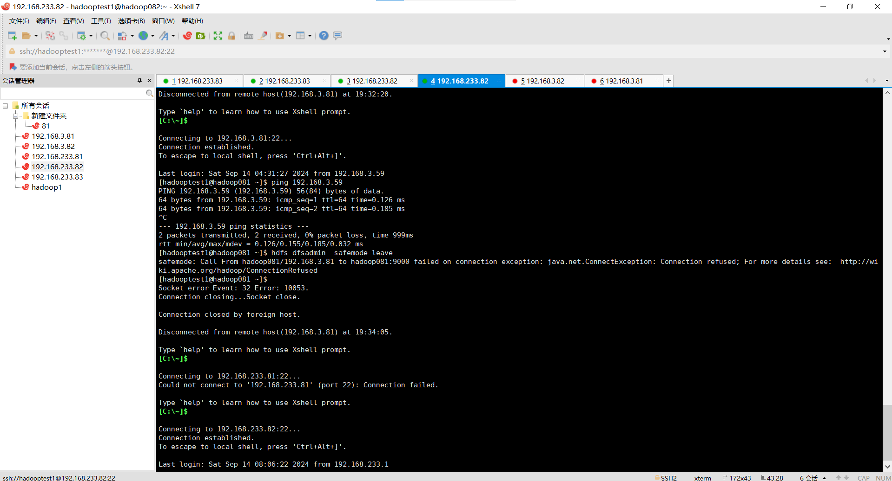
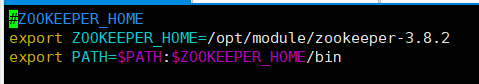

本搜索引擎系统的主要功能模块包括：
数据采集模块
数据预处理模块
索引构建模块
查询处理模块
结果排序模块
用户接口模块
监控与日志模块
随着搜索引擎需要处理超高并发和超大数据量，国内多数搜索引擎采用集中式架构，导致服务器性能要求高、可扩展性差、宽带浪费和重复性工作等问题，难以应对日益增长的数据规模。而基于分布式架构的搜索引擎，如Hadoop，能够提供高性能、低成本的解决方案，因此在搜索引擎中引入Hadoop是必要的。
Hadoop是Apache基金会开发的开源分布式系统基础架构，具有高扩展性和容错性。它的核心组件包括：
尽管Hadoop有许多优势，但在某些场景中仍然存在一些局限性，特别是在Hadoop 3.x版本中体现得更为明显：
Hadoop凭借其高效、低成本、易扩展的特点，适合作为分布式搜索引擎的基础架构。然而，对于实时性要求高或涉及大量小文件的场景，Hadoop的效率会大打折扣。在这种情况下，可以考虑将Hadoop与其他大数据工具（如Spark）结合使用，以弥补其不足，提高搜索引擎的性能和灵活性。
将老师发布的sentences.txt.zip解压，利用python程序把文档拆分成940个小文件，分别命名为file0-file939。
将拆分后的文件上传到HDFS，实现分布式存储。
使用 MapReduce 对存储在 HDFS 中的文件进行倒排索引的计算，这样可以根据查询的关键词返回包含该关键词的文档列表。
在Hbase中创建一个表InvertedIndexTable，它的行键是每个词，列族存储该词对应的文件路径列表。
在HBase中输入需要查询的词，利用倒排索引快速呈现查询结果。
从老师发布的文件获取原始数据，解压后通过python程序将大文件分割成940个小文件，然后将文件内容上传到hdfs。然后利用MapReduce代码对文件分别进行处理。代码的具体逻辑是在Map阶段生成单词和文档ID的键值对并传输给Combine模块，Combine阶段对Map的键值对进行基础的归并和排序，Reduce阶段对单词在每个文件中出现的次数进行相加并写入HBase中。
当用户在HBase中输入搜索内容后，HBase会自动列出该单词和所有存储了该单词的文件。
阶段一：设计Hadoop分布式计算引擎
目标：建立一个基于Hadoop的分布式计算引擎，支持海量数据的高效处理。
任务：
研究Hadoop框架的基本原理和组件（如HDFS、MapReduce、YARN等）。
设计适用于搜索引擎的数据处理架构，特别是数据抓取和预处理的管道。
实现Hadoop集群的部署与配置，确保高可用性和扩展性。
优化Hadoop作业的执行，减少数据处理的延迟和资源消耗。
重点：选择合适的调度算法和数据分区策略，以优化数据抓取和处理的性能。
阶段二：嵌入倒排索引技术（全文检索）
目标：实现基于倒排索引的全文检索功能，以支持高效的搜索查询。
任务：
理解倒排索引的结构和构建过程，包括词项、文档频率、倒排列表等。
设计倒排索引的生成算法，确保索引构建的效率和准确性。
集成全文检索库（如Lucene），或者自定义开发全文检索模块。
实现索引更新策略（增量更新、全量重建等）以适应动态数据变化。
重点：优化索引存储结构和查询算法，提升查询的响应速度和准确性。
阶段三：实现中文分词技术
目标：设计并实现中文分词算法，提高中文搜索结果的准确性。
任务：
调研现有的中文分词算法（如正向最大匹配、双向最大匹配、统计模型等）并选型。
实现分词算法并进行性能优化，支持自定义词典和词性标注。
解决分词中的歧义问题，提高分词的准确率。
集成分词模块与倒排索引构建过程，以支持中文文本的有效索引和检索。
重点：平衡分词的准确性和性能，处理好词库维护和动态更新的问题。
阶段四：设计分布式数据库系统
目标：设计一个高效的分布式数据库系统，用于存储和管理海量数据。
任务：
分析业务需求，确定需要存储的数据类型（文档元数据、用户行为数据等）。
选型分布式数据库系统（如HBase、Cassandra、Elasticsearch等），并设计数据模型。
设计数据库的分区和副本策略，以提高数据的读写性能和可靠性。
优化数据库的索引策略，确保高效的数据查询和检索性能。
重点：设计合理的数据分片和副本管理策略，平衡数据一致性和可用性。
阶段五：开发Web客户端
目标：开发一个友好的Web前端，提供用户高效的搜索体验。
任务：
设计用户界面（UI）和用户体验（UX），确保简洁易用的操作流程。
实现前端功能模块（如搜索框、搜索结果展示、过滤器等）。
提供智能提示和自动补全功能，以提高用户输入效率。
集成前端与后端API接口，确保数据的实时性和准确性。
重点：关注用户体验，确保前端页面的响应速度和交互性。
阶段六：测试和功能完善
目标：全面测试系统功能，修复缺陷并优化性能。
任务：
制定测试计划，进行单元测试、集成测试、性能测试和用户测试。
收集测试反馈，修复Bug和优化功能，确保系统的稳定性和可用性。
完善日志和监控系统，确保故障的快速定位和恢复。
进行负载测试和安全测试，优化系统的扩展性和安全性。
重点：全面测试和持续优化，确保系统在高并发和大数据量下的稳定运行。
1.项目经理（1人）
项目经理负责整体项目规划和协调，确保项目按时交付。担当决策关键技术选型的责任，协调各团队成员的工作，并与相关利益方保持沟通。
2.系统架构师（2人）
系统架构师负责设计整体系统架构，确保系统的可扩展性和高性能。制定核心技术实现方案，为开发团队提供技术支持和指导。
3.开发工程师（3人）
开发团队负责具体的技术实现，包括文件分割、索引构建、查询处理、结果排序等任务。通过协同工作，确保后端系统的高效运行和数据处理。
4.测试工程师（2人）
测试团队负责进行系统测试和性能测试，确保系统的稳定性和可靠性。通过全面的测试，提供反馈和建议，帮助优化系统的性能和功能。
| 学号 | 姓名 | 角色分工 |
|---|---|---|
| 1120223574 | 张靖仁 | 系统架构师、开发工程师 |
| 1120222100 | 窦翊恒 | 系统架构师、测试工程师 |
| 1120221327 | 王凯雯 | 项目经理、开发工程师 |
| 1120221310 | 叶家希 | 开发工程师、测试工程师 |
索引功能：
查询功能：
验证测试结果：
负载测试：
响应时间：
数据处理速度：
身份验证：
数据隐私：
权限控制：
跨平台测试：
版本兼容性：
性能保证：
可靠性保证：
安全性保证：
可维护性保证：
兼容性保证：
可用性保证：
设置日志记录：
监控系统性能：
运用MapReduce算法计算,构建一个倒排索引, 将倒排索引存储在HBase中,数据为老师提供的sentence.txt文件。
| 学号 | 姓名 | 实验负责内容 | 文档负责内容 |
|---|---|---|---|
| 1120223574 | 张靖仁 | 1. 初步配置单机完全分布hadoop环境 2. 完成MapReduce的代码实现 3. 参与三台设备完全分布环境的调试，实现倒排索引在完全分布环境上运行 |
1. 搜索引擎技术文档负责撰写软件质量保证、非功能性保证、软件维护部分 2. 实验报告负责撰写算法及实现部分 |
| 1120222100 | 窦翊恒 | 1. 负责网络的架构，调试完全分布的网络配置以实现不同主机之间的通信与文件传输 2. 配置修改完全分布的Hadoop环境 3. 完成数据处理与准备部分代码实现 4. 参与三台设备完全分布环境的调试，实现倒排索引在完全分布环境上运行 |
1. 搜索引擎技术文档负责撰写技术选型、工作计划部分 2. 实验报告负责撰写数据准备、实验进度要求、完全分布集群网络配置部分 |
| 1120221327 | 王凯雯 | 1. 负责配置单机完全分布hadoop环境 2.调试三机完全分布的环境，实现倒排索引在完全分布环境上运行 3.负责单机完全分布的倒排索引程序的运行调试，并导入数据库 4.编写了文件导入hdfs的代码 |
1. 搜索引擎技术文档负责撰写功能描述部分 2. 实验报告负责撰写环境的安装与配置的分布式环境配置、实验结果分析部分 |
| 1120221310 | 叶家希 | 1.负责配置单机伪分布hadoop环境 2.调试单机伪分布的环境，实现倒排索引在伪分布环境上运行 3.负责单机伪分布的倒排索引程序的运行调试，并导入数据库 4.通过命令行将单机本地文件上传到hdfs |
1. 搜索引擎技术文档负责撰写功能实现部分 2. 实验报告负责撰写环境的安装与配置的伪分布环境配置、实验运行结果与分析部分 |
数据来自i北理群，解压sentence压缩包后其中sentence.txt为1.392316kb。通过由于文件过大无法使用记事本打开，通过python代码显示文本内容，得到一共有9397023行，每行有一个行号（0-9397022）和一个英文长句，相邻单词用空格分离。数据中仅包含数字与英文字母，无特殊符号。
数据处理
运行wordcut.py将同目录下的sentence.txt按照每一万行句子进行划分，并将划分好的940个文件命名为files0~files939，并存入files文件夹中。
wordcut.py代码如下
import os
import math
# 指定输入文件和输出目录
input_file_path = r"sentences.txt" # 输入的txt文件路径
output_directory = r'files' # 指定的输出目录路径
# 打开原始txt文件,一共有9397023条句子
with open(input_file_path, 'r', encoding='utf-8') as input_file:
lines = input_file.readlines()
# 计算总行数和文件数
total_lines = len(lines)
num_files = (total_lines + 9999) // 10000
# 分割文件
for i in range(num_files):
start = i * 10000
end = min((i + 1) * 10000, total_lines)
output_filename = os.path.join(output_directory, f'file{i}.txt')
# 写入分割后的内容到新文件
with open(output_filename, 'w', encoding='utf-8') as output_file:
output_file.writelines(lines[start:end])
节点分配设计
因为是单机伪分布，所有类型的节点都布局在一台机器上，包括NameNode，SecondaryNameNode，DataNode，ResourceManager，NodeManager和Zookeeper，每个节点的具体分工见完全分布的表格。
使用SSH连接
单机伪分布需要在一台机器上协调各个节点的进程，因此也需要SSH免密连接首先使用如下命令创建RSA密钥对，RSA密钥对应该在客户端申请，在此处就是在CentOS7中申请。
ssh-keygen
然后直接使用如下命令将id_rsa.pub复制到服务端，因为是单机伪分布，服务端还是本台机器，直接将远程地址改为localhost.
ssh-copy-id localhost
然后检查~/.ssh目录下的authorized_keys文件，发现id_rsa.pub的内容已被复制，说明SSH免密连接成功（注意.ssh目录是一个隐藏目录，在~目录下直接使用ls命令不会显示，但是可以通过cd进入）。
为了后续操作方便起见，再在Windows中创建一组密钥对然后将密钥复制到CentOS，使得可以通过XShell访问虚拟机以及能通过Windows的Web端UI检查集群等。
软件安装与节点配置文件
软件的下载与安装过程与完全分布并无太大差异，下文完全分布会展开，此处不再赘述，但由于单机与三机的内存差异，在配置文件中可能会略有不同，因此以下详细罗列各个软件的配置文件。
core-site.xml
<configuration>
<property>
<name>fs.defaultFS</name>
<value>hdfs://hadoop:9000</value>
</property>
<property>
<name>hadoop.tmp.dir</name>
<value>/opt/module/hadoopTmp/</value>
</property>
</configuration>
hdfs-site.xml
<configuration>
<property>
<!-- 设置HDFS元数据文件存放路径 -->
<name>dfs.namenode.name.dir</name>
<value>/opt/module/hd_space/hdfs/name</value>
</property>
<property>
<!-- 设置HDFS数据文件存放路径 -->
<name>dfs.datanode.data.dir</name>
<value>/opt/module/hd_space/hdfs/data</value>
</property>
<property>
<!-- 设置HDFS数据文件副本数 -->
<name>dfs.replication</name>
<value>1</value>
</property>
<property>
<!-- 设置其他用户执行操作时会提醒没有权限 -->
<name>dfs.permissions</name>
<value>false</value>
</property>
</configuration>
yarn-site.xml
<configuration>
<property>
<name>yarn.resourcemanager.hostsname</name>
<value>hadoop</value>
</property>
<property>
<name>yarn.nodemanager.aux-services</name>
<value>mapreduce_shuffle</value>
</property>
<property>
<name>yarn.scheduler.maximum-allocation-mb</name>
<value>3072</value> <!-- 最大任务内存设置为2GB -->
</property>
<property>
<name>yarn.nodemanager.resource.memory-mb</name>
<value>3072</value> <!-- YARN NodeManager总内存设置为3GB内存中的2.5GB左右，留出一些空间给系统和其他进程 -->
</property>
</configuration>
mapred-site.xml
<configuration>
<property>
<name>mapreduce.framework.name</name>
<value>yarn</value>
</property>
<property>
<name>yarn.app.mapreduce.am.env</name>
<value>HADOOP_MAPRED_HOME=/opt/module/hadoop-3.3.5</value>
</property>
<property>
<name>mapreduce.map.env</name>
<value>HADOOP_MAPRED_HOME=/opt/module/hadoop-3.3.5</value>
</property>
<property>
<name>mapreduce.reduce.env</name>
<value>HADOOP_MAPRED_HOME=/opt/module/hadoop-3.3.5</value>
</property>
</configuration>
hbase-site.xml
<configuration>
<property>
<name>hbase.cluster.distributed</name>
<value>false</value>
</property>
<property>
<name>hbase.tmp.dir</name>
<value>./tmp</value>
</property>
<property>
<name>hbase.unsafe.stream.capability.enforce</name>
<value>false</value>
</property>
<property>
<name>hbase.rootdir</name>
<value>hdfs://hadoop:9000/hbase</value>
</property>
<property>
<name>hbase.master</name>
<value>hadoop:60000</value>
</property>
<property>
<name>hbase.cluster.distributed</name>
<value>true</value>
</property>
<property>
<name>hbase.zookeeper.quorum</name>
<value>hadoop</value>
</property>
<property>
<name>hbase.zookeeper.property.dataDir</name>
<value>2181</value>
</property>
<property>
<name>hbase.master.port</name>
<value>16000</value>
</property>
<property>
<name>hbase.master.info.port</name>
<value>16010</value>
</property>
<property>
<name>hbase.unsafe.stream.capability.enforce</name>
<value>false</value>
</property>
<property>
<name>hbase.wal.provider</name>
<value>filesystem</value>
</property>
</configuration>
单机伪分布集群启动
在虚拟机初始状态下输入jps查看当前运行进程，很明显只有jps一条，集群未启动
进入hadoop安装解压后的sbin目录，利用start-all.sh开启hadoop集群
再使用jps命令，发现此时的进程除了jps多了几条
然后进入网页端UI检查集群是否启动成功
网页端口名分别为http://hadoop:9870和http://hadoop:8088
界面显示如下，说明hadoop集群启动成功
接着进入zookeeper安装解压后的bin目录，利用zkServer.sh start启用zookeeper，同样通过jps检查，发现当前新增了一个进程QuorumPeerMain，说明zookeeper启动成功
最后进入hbase安装解压后的bin目录，利用start-hbase.sh启动hbase，检查jps发现多了HMaster和HRegionServer两项进程

最后再进入hbase的WebUI检查启动是否成功 网络端口号为http://hadoop:16010
该图片显示启动成功。
| 节点编号 | 节点类型 | IP地址 | 角色/职责 | CPU核数 | 内存(GB) | 磁盘空间(GB) | 备注 |
|---|---|---|---|---|---|---|---|
| 1 | NameNode | 192.168.3.81 | 管理HDFS元数据，负责文件系统的命名空间和控制 | 2 | 2 | 40 | 主要负责元数据存储与查询 |
| 2 | SecondaryNameNode | 192.168.3.83 | 协助NameNode备份元数据、检查点 | 8 | 2 | 40 | 作为NameNode的辅助节点 |
| 3 | DataNode | 192.168.3.81 | 存储实际数据块，提供数据读写服务 | 2 | 2 | 40 | 每个DataNode存储HDFS数据块 |
| 4 | DataNode | 192.168.3.82 | 存储实际数据块，提供数据读写服务 | 2 | 2 | 40 | 多个DataNode提供冗余和高可用性 |
| 5 | DataNode | 192.168.3.83 | 存储实际数据块，提供数据读写服务 | 8 | 2 | 40 | 提供负载均衡和分布式存储 |
| 6 | ResourceManager | 192.168.3.81 | 管理集群资源，调度计算任务 | 2 | 2 | 40 | 负责资源调度 |
| 7 | NodeManager | 192.168.3.82 | 负责任务执行及资源管理 | 2 | 2 | 40 | 管理YARN应用程序的容器 |
| 8 | NodeManager | 192.168.3.83 | 负责任务执行及资源管理 | 8 | 2 | 40 | 提供计算能力的分布式资源节点 |
| 9 | Zookeeper | 192.168.3.83 | 提供分布式协调服务，管理集群节点状态 | 8 | 2 | 40 | 负责NameNode的高可用性和选举 |
设置IP地址
需要修改主机VM8，虚拟网络编辑器和虚拟机网卡。
首先是VMnet8的设置：

将IP，网关和DNS的第三位调整一致。
然后设置虚拟网络编辑器：

将子网的网段前三位改为与VMnet8的IP一致。
然后配置虚拟机网卡，在命令终端输入
$ vim /etc/sysconfig/network-scripts/ifcfg-ens33
进入页面修改虚拟机的网卡如下图所示：

至此，所有IP配置完毕
使用XShell连接
如果可以使用XShell连接，说明本地的网络与虚拟机服务器之间的网络是畅通的，没有防火墙或其他网络障碍阻止连接。所以这步需要先关闭防火墙，确认访问端口开启，然后再用XShell连接，连接成功后ping外网和本机IP，保证网络畅通。
首先关闭防火墙，并检查防火墙状态:
$ sudo systemctl stop firewalld
$ sudo systemctl disable firewalld
$ sudo systemctl status firewalld
出现以下状态即为关闭成功：
然后检查开放的端口：
$ sudo ss -tuln
检查端口是否开放
 可以看到22号端口是开放的。
可以看到22号端口是开放的。
然后我们使用XShell对其进行连接：
图示即为连接成功。
然后测试ping网络：

如图即为成功ping通。至此已经完成XShell的连接.
jdk安装
将jdk压缩包解压至指定目录下，打开etc/profile进行环境变量的修改：
$ vi /etc/profile.d/dfs.sh

然后输入：
$ source /etc/profile
$ java -version
说明jdk安装成功
hadoop安装
将hadoop压缩包解压至指定目录下，打开etc/profile进行环境变量的修改：
zooKeeper安装
将zookeeper压缩包解压至指定目录下，打开etc/profile进行环境变量的修改：

然后需要修改zoo.cgf，在之后会提到。
hbase安装
将hbase压缩包解压至指定目录下，打开etc/profile进行环境变量的修改：
修改hbase-env.sh
虚拟机复制
将样本机复制两次样本，一共有三台虚拟机，命名为hadoop081，hadoop082，hadoop083：

将两台主机的网卡分别改为对应的IP，再修改其主机名。修改IP之前已经展示，接下来就展示主机名修改。命令输入：
$ vim /etc/hostname

如上图为hadoop082主机名的修改。
core-site.xml
<configuration>
<property>
<name>fs.defaultFS</name>
<value>hdfs://hadoop081:9000</value>
</property>
<property>
<name>hadoop.tmp.dir</name>
<value>/var/big_data</value>
</property>
</configuration>
hdfs-site.xml
<configuration>
<property>
<name>dfs.replication</name>
<value>2</value>
</property>
<property>
<name>dfs.namenode.secondary.http-address</name>
<value>hdfs://hadoop083:9868</value>
</property>
</configuration>
yarn-site.xml
<configuration>
<property>
<name>yarn.nodemanager.aux-services</name>
<value>mapreduce_shuffle</value>
</property>
<property>
<name>yarn.resourcemanager.hostname</name>
<value>hadoop081</value>
</property>
<property>
<name>yarn.scheduler.minimum-allocation-mb</name>
<value>256</value>
</property>
<property>
<name>yarn.scheduler.maximum-allocation-mb</name>
<value>1540</value>
</property>
<property>
<name>yarn.nodemanager.resource.memory-mb</name>
<value>1540</value>
</property>
<property>
<name>yarn.nodemanager.env-whitelist</name><value>JAVA_HOME,HADOOP_COMMON_HOME,HADOOP_HDFS_HOME,HADOOP_CONF_DIR,CLASSPATH_PREPEND_DISTCACHE,HADOOP_YARN_HOME,HADOOP_MAPRED_HOME</value>
</property>
</configuration>
mapred-site.xml
<configuration>
<property>
<name>mapreduce.framework.name</name>
<value>yarn</value>
</property>
</configuration>
'''
hbase-site.xml
<configuration>
<property>
<name>hbase.cluster.distributed</name>
<value>true</value>
</property>
<property>
<name>hbase.tmp.dir</name>
<value>/opt/module/hbase-2.5.4/tmp</value>
</property>
<property>
<name>hbase.unsafe.stream.capability.enforce</name>
<value>false</value>
</property>
<property>
<name>hbase.rootdir</name>
<value>hdfs://hadoop081:9000/hbase</value>
</property>
<property>
<name>hbase.zookeeper.quorum</name>
<value>hadoop081,hadoop082,hadoop083</value>
</property>
<property>
<name>hbase.zookeeper.property.dataDir</name>
<value>/opt/module/zookeeper-3.8.2/zkData</value>
</property>
<property>
<name>hbase.master.info.port</name>
<value>16010</value>
</property>
</configuration>
zoo.cfg
# The number of milliseconds of each tick
tickTime=2000
# The number of ticks that the initial
# synchronization phase can take
initLimit=10
# The number of ticks that can pass between
# sending a request and getting an acknowledgement
syncLimit=5
# the directory where the snapshot is stored.
# do not use /tmp for storage, /tmp here is just
# example sakes.
dataDir=/opt/module/zookeeper-3.8.2/zkData
# the port at which the clients will connect
clientPort=2181
# the maximum number of client connections.
# increase this if you need to handle more clients
#maxClientCnxns=60
#
# Be sure to read the maintenance section of the
# administrator guide before turning on autopurge.
#
# https://zookeeper.apache.org/doc/current/zookeeperAdmin.html#sc_maintenance
#
# The number of snapshots to retain in dataDir
#autopurge.snapRetainCount=3
# Purge task interval in hours
# Set to "0" to disable auto purge feature
#autopurge.purgeInterval=1
## Metrics Providers
#
# https://prometheus.io Metrics Exporter
#metricsProvider.className=org.apache.zookeeper.metrics.prometheus.PrometheusMetricsProvider
#metricsProvider.httpHost=0.0.0.0
#metricsProvider.httpPort=7000
#metricsProvider.exportJvmInfo=true
server.1=hadoop081:2888:3888
server.2=hadoop082:2888:3888
server.3=hadoop083:2888:3888
单机完全分布集群启动
在三台机子上先启动各自的zookeeper，随后查看各自节点的zookeeper是否成功启动。
$ zkServer.sh start
$ zkServer.sh status
当出现以下的语句时表示zk启动完成：
然后启动hdfs和yarn以及hbase：
$ start-all.sh
$ start-hbase.sh
查看各个节点是否启动成功：

三机完全分布集群网络配置
为了实现三机之间的通信以及文件的传输，按照以下的步骤配置集群网络：
（1）.将三个主机该为桥接模式，勾选复制物理网络连接状态选项，并连接在同一个局域网下，本次实验的局域网选择的是手机WiFi热点连接，网段前三位为192.168.3。
（2）.修改三个虚拟机的ip地址，使得其与主机的网段的前三位相同，第四位设置为该虚拟机编号的地址，如192.168.3.82。
（3）.修改三个虚拟机的GATEWAY值，使得三个主机的网关相同，均为192.168.3.111.
修改完成后其中一台机器的主机ip以及虚拟机ip地址配置如下：

尝试ping通其他机器，成功，证明网络配置已完成
三机完全分布集群启动
具体启动过程和单机完全分布一致，主要展示启动后的web访问图片:
从左到右分别展示hbase，hdfs和yarn的界面，均可访问。表示三机完全分布式启动成功。
MapReduce是由hadoop提供的一个开源软件框架，基于该框架能够容易地编写应用程序运行在由上千个商用机器组成的大集群上，并以一种可靠的，具有容错能力的方式并行地处理上TB级别的海量数据集。
在本次实验中，我们使用MapReduce框架实现了词频统计及倒排索引的Java程序，能够在hadoop上分布式运行，并将处理结果导入进hbase当中。
Java项目使用jdk1.8.0_422。采用Maven自动导入hadoop上MapReduce框架的相关依赖。
<?xml version="1.0" encoding="UTF-8"?>
<project xmlns="http://maven.apache.org/POM/4.0.0"
xmlns:xsi="http://www.w3.org/2001/XMLSchema-instance"
xsi:schemaLocation="http://maven.apache.org/POM/4.0.0 http://maven.apache.org/xsd/maven-4.0.0.xsd">
<modelVersion>4.0.0</modelVersion>
<groupId>com.test</groupId>
<artifactId>InvertedMapReduce</artifactId>
<version>1.0-SNAPSHOT</version>
<properties>
<maven.compiler.source>8</maven.compiler.source>
<maven.compiler.target>8</maven.compiler.target>
<project.build.sourceEncoding>UTF-8</project.build.sourceEncoding>
</properties>
<dependencies>
<dependency>
<groupId>org.apache.hadoop</groupId>
<artifactId>hadoop-common</artifactId>
<version>3.3.5</version>
</dependency>
<dependency>
<groupId>org.apache.hadoop</groupId>
<artifactId>hadoop-client</artifactId>
<version>3.3.5</version>
</dependency>
<dependency>
<groupId>org.apache.hbase</groupId>
<artifactId>hbase-common</artifactId>
<version>2.5.10</version>
</dependency>
<dependency>
<groupId>org.apache.hbase</groupId>
<artifactId>hbase-client</artifactId>
<version>2.5.10</version>
</dependency>
<dependency>
<groupId>org.apache.hbase</groupId>
<artifactId>hbase-mapreduce</artifactId>
<version>2.5.10</version>
</dependency>
</dependencies>
</project>
InvertedMapper.java代码
```
public class InvertedMapper extends Mapper<LongWritable, Text, Text, Text>
{
private final Text keyInfo = new Text(); // 表示单词的键
private final Text valueInfo = new Text("1"); // 表示句子编号和某单词出现次数的// 单词和其在句子中出现的次数
@Override
protected void map(LongWritable key, Text value, Context context) throws IOException, InterruptedException
{
// 将输入的文本行拆分为单词和句子编号
String[] orderedSentences = value.toString().split(" ");
// 获取文件名
FileSplit filesplit = (FileSplit) context.getInputSplit();
String filename = filesplit.getPath().getName();
String[] sentences = Arrays.copyOfRange(orderedSentences, 1, orderedSentences.length); // 获取句子中的单词数组
// 遍历句子中的单词，构建mapper，输出的形式应该是<单词:文件名,1>
for (String word : sentences)
{
keyInfo.set(word+":"+filename);
context.write(keyInfo,valueInfo);
}
}
}
```
类定义
InvertedMapper类继承自 Mapper<LongWritable, Text, Text, Text>，其中 Mapper 是Hadoop中的核心类，用于将输入数据映射为键值对。它实现了 map() 方法，处理输入数据并生成中间结果，供后续的Reducer处理。
数据结构与定义
LongWritable key：文件中当前处理行的偏移量，作为行号。Text value：代表文件中的一行数据，假设每行数据包含一个句子编号及其对应的句子文本。Text)：格式为 word:filename，表示某个单词出现在某个文件中。Text)：固定为 "1"，表示每次遇到该单词在该文件中出现一次。算法核心
map() 方法：
输入：
key：行号（LongWritable类型），在这段代码中没有使用。value：表示一行输入文本（Text类型）。context：提供了与Hadoop框架通信的上下文，允许Mapper将结果输出。处理过程：
拆分行文本：使用 value.toString().split(" ") 将输入的文本行按空格拆分为一个单词数组。拆分后的第一个元素（句子编号）被忽略，后续的元素是句子中的单词。
获取文件名：通过 FileSplit 获取当前处理的输入文件名，这个文件名会与每个单词组合在一起，用作键的一部分。
构建键值对：通过遍历句子中的每个单词，将单词与文件名组合（格式为 word:filename），然后将该组合作为键，"1" 作为值（代表该单词在该文件中出现过一次），并输出到 context 中。
InvertedCombiner.java代码
public class InvertedCombiner extends Reducer<Text,Text,Text,Text> {
private final Text valueInfo = new Text();
@Override
protected void reduce(Text key,Iterable<Text> values,Context context) throws IOException,InterruptedException {
int sum = 0;
for (Text value:values){
sum += Integer.parseInt(value.toString());
}
int fileNameIndex = key.toString().indexOf(":");
//重设value和key值
valueInfo.set(key.toString().substring(fileNameIndex+1)+":"+sum);
key.set(key.toString().substring(0,fileNameIndex));
//输出应该是<单词,文件名:次数>
context.write(key,valueInfo);
}
}
类定义
InvertedCombiner类继承自 Reducer<Text, Text, Text, Text>：它实现了 reduce() 方法，将Mapper生成的中间结果进行局部聚合。输入键值对为 <Text, Text>，输出的键值对也是 <Text, Text>。
Combiner在MapReduce中的作用
Mapper阶段的输出：在Mapper阶段，每行文本被处理后，生成的键值对是 <word:filename, 1>，表示某个单词在某个文件中出现了一次。对于同一个文件中的同一个单词，可能会产生多个键值对，如：
<word1:file1, 1>
<word1:file1, 1>
<word2:file1, 1>
Combiner阶段的优化：Combiner相当于一个局部的Reducer，它的作用是对Mapper输出的结果进行局部合并，减少数据传输量。在 InvertedCombiner 中，它负责计算出同一文件中某个单词的总出现次数，并将结果重新格式化为 <单词, 文件名:次数> 的形式。例如：
Mapper 输出: <word1:file1, 1>, <word1:file1, 1>
Combiner 输出: <word1, file1:2>
这样，在Reducer阶段传输的数据量大大减少，从而一定程度提高了性能。
算法实现
reduce() 方法：
输入：
key：一个文本类型的键，表示Mapper输出的键，格式为 word:filename。values：一个 Iterable<Text> 集合，表示Mapper输出的所有值。每个值是 "1"，表示单词在该文件中出现一次。处理过程：
计算单词出现的总次数：遍历 values 集合，累加每个值（这里每个值都是 "1"），得到单词在某个文件中的总出现次数。
拆分键，调整输出格式：通过 key.toString().indexOf(":") 找到word:filename 字符串中 : 的位置，方便后续进行拆分。使用 substring 方法将 key 拆分为 word 和 filename。
重设键值对：将 key 设置为单词（仅保留单词部分，不再包含文件名）。将 valueInfo 设置为文件名和单词出现的总次数，格式为 filename:count。
输出：
输出的键为单词，值为 filename:count，即 <单词, 文件名:次数> 的形式。
InvertedIndexReducer.java代码
public class InvertedReducer extends TableReducer<Text,Text, ImmutableBytesWritable> {
private static final Text result = new Text();
@Override
protected void reduce(Text key,Iterable<Text> values,Context context) throws IOException, InterruptedException {
StringBuilder fileList = new StringBuilder();
for (Text value:values){
fileList.append(value.toString()).append(";");
}
result.set(fileList.toString());
Put put = new Put(key.toString().getBytes());
put.addColumn("info".getBytes(), "index".getBytes(), result.toString().getBytes());
context.write(null, put);
}
}
类定义
InvertedReducer类继承自 TableReducer<Text, Text, ImmutableBytesWritable>。用于将输入的 key 和 values 进行处理，并将结果输出到 HBase 表中。
算法实现
reduce() 方法：
输入：
key：一个文本类型的键，表示Combiner输出的键，格式为 word。values：一个 Iterable<Text> 集合，表示Combiner输出的所有值。每个值是 filename:count，表示单词在该文件中的总出现次数。处理过程：
字符串拼接：
代码通过遍历 Iterable<Text> values，逐一获取每个 Text 值，并将它们拼接到 fileList 字符串中。每个值之间用 ; 作为分隔符。
构造 HBase Put 对象：
Put 是 HBase 的数据操作对象，用于将数据存储到 HBase 表中。代码通过将 key 转换为字节数组来创建一个 Put 对象。之后，通过 put.addColumn() 方法，向名为 info 的列族和 index 列中添加数据，值是拼接后的 fileList 字符串。
写入结果到上下文：
context.write(null, put) 表示将构造好的 Put 对象写入到 HBase 表中。在这个例子中，key 是 null，这表示输出的行键已经在 Put 对象中定义。
InvertedIndexDriver.java代码
public class Driver {
public static void main(String[] args) throws ClassNotFoundException, IOException,InterruptedException {
Configuration conf = new Configuration();
//hdfs 主NameNode通信地址
conf.set("fs.defaultFS","hdfs://hadoop:9000");
//yarn 主resourcemanager通信地址
conf.set("yarn.resourcemanager.hostname","hadoop");
//zookeeper集群，连接到HMaster
conf.set("hbase.zookeeper.quorum","hadoop");
Job job = Job.getInstance(conf);
job.setJarByClass(Driver.class);
job.setMapperClass(InvertedMapper.class);
job.setCombinerClass(InvertedCombiner.class);
job.setReducerClass(InvertedReducer.class);
job.setMapOutputKeyClass(Text.class);
job.setMapOutputValueClass(Text.class);
job.getConfiguration().setStrings("mapreduce.reduce.shuffle.memory.limit.percent", "0.15");
FileInputFormat.setInputPaths(job,new Path(args[0]));
TableMapReduceUtil.initTableReducerJob("InvertedIndexTable",InvertedReducer.class,job);
boolean res = job.waitForCompletion(true);
System.exit(res?0:1);
}
}
类定义
Driver作为Hadoop MapReduce的驱动程序，负责配置和启动作业。其核心任务是使用 InvertedMapper、InvertedCombiner 和 InvertedReducer 来处理 HDFS 中的数据，并将结果写入 HBase 表中。
算法实现
异常处理
main方法抛出了一些异常，常见于 Hadoop 程序，如 ClassNotFoundException、IOException 和 InterruptedException，用于处理分布式作业的异常情况。
Configuration 配置对象
Configuration conf = new Configuration();：创建一个 Hadoop 配置对象 conf，用于存储作业的配置信息。Hadoop 集群的连接信息如下：
conf.set("fs.defaultFS","hdfs://hadoop:9000");：设置 HDFS 的主 NameNode 的地址，即文件系统的默认根路径。conf.set("yarn.resourcemanager.hostname","hadoop");：配置 Yarn 的 ResourceManager 地址，负责作业的资源调度。conf.set("hbase.zookeeper.quorum","hadoop");：配置 Zookeeper 集群的地址，Zookeeper 用于管理 HBase 的 HMaster。作业初始化
Job job = Job.getInstance(conf);：创建一个新的 Job 实例，用于配置和管理 MapReduce 作业。job.setJarByClass(Driver.class);：设置包含主类的 JAR 文件，这个 JAR 包含作业的执行代码，并且可以在分布式节点上运行。设置 Mapper、Combiner 和 Reducer 类
job.setMapperClass(InvertedMapper.class);：指定作业的 Mapper 类，负责将输入数据拆分并生成键值对。job.setCombinerClass(InvertedCombiner.class);：指定作业的 Combiner 类，用于在 Mapper 输出后，Reducer 之前对数据进行本地聚合。job.setReducerClass(InvertedReducer.class);：指定 Reducer 类，用于最终的聚合和结果输出。设置 Map 输出的键值类型
job.setMapOutputKeyClass(Text.class);：Mapper 输出的键的类型为 Text，即 Hadoop 的文本类型。job.setMapOutputValueClass(Text.class);：Mapper 输出的值的类型也是 Text，即文本数据。其他配置
job.getConfiguration().setStrings("mapreduce.reduce.shuffle.memory.limit.percent", "0.15");：设置 Reduce 任务的内存限制，用于限制 MapReduce 过程中的内存使用。输入路径配置
FileInputFormat.setInputPaths(job, new Path(args[0]));：通过 FileInputFormat 设置作业的输入路径，该路径来自命令行参数 args[0]。与 HBase 的集成
TableMapReduceUtil.initTableReducerJob("InvertedIndexTable", InvertedReducer.class, job);
这行代码使用 TableMapReduceUtil 工具类将结果输出到 HBase 表中，指定表名为 "InvertedIndexTable"。第二个参数 InvertedReducer.class 是 Reducer 类，用于将结果写入 HBase。通过这种方式，作业的输出不是写入 HDFS 文件系统，而是直接插入到 HBase 表中。

create 'InvertedIndexTable'
hadoop jar test.jar /input/data

$ scan 'Final',{STARTROW => 'ac'}
通过为期一周的小学期学习和一个月以来断断续续的实验实践，我们从初次接触大数据时的一无所知渐渐熟悉了大数据的基本技术和Hadoop架构，慢慢了解了大数据技术的特点及其应用场景，同时掌握了Hadoop分布式架构的优势、工作原理以及MapReduce的运行机制。
在实验中，我们动手实践，从搭建环境入手，分别在虚拟机上构建了伪分布式和完全分布式的架构，并自主编写了MapReduce程序。这一过程几多困难曲折，不论是完全分布虚拟主机桥接模式的网络配置，还是编译MapReduce Java程序的Maven依赖导入问题，还是实际运行倒排索引时内存不足导致yarn下线，面对密密麻麻各种各样难以言状的报错和bug，我们不得不辗转于各大技术论坛，求助于万能的chatgpt，耗费无数的日夜交流，讨论，合作，不断祈祷实验能够顺利完成。尽管如此，当倒排索引的结果最终成功写入HBase之后，虽心力交瘁，但满身轻松愉快，收获颇丰。我们不仅对Hadoop分布式架构和HBase数据库有了更加深入的认识，也提高了自主发现问题解决问题的能力，极大增进了了小组成员间的默契和团队合作能力。
最后，感谢本学期中郭老师对课程内容的精心设计和在小学期期间的认真讲解，也祝愿郭老师在接下来的工作、生活中一切顺利。